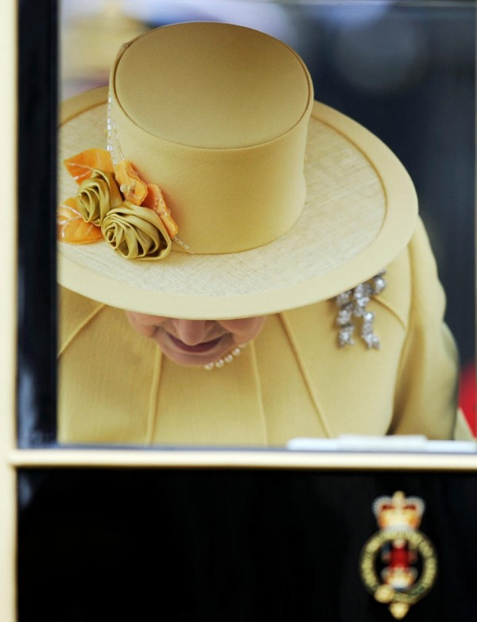

Никак не могу понять, кем в моей жизни был бен Ладен. Я даже как-то никогда не интересовался его биографией.
Вроде не любил американцев, испытывал личную неприязнь к ним. Но ведь это по словам самих американцев. Жил где-то в Средней Азии. опять же по словам наших заокеанских коллег. Вроде практически в одиночку организовал 11 сентября (хотя) я слышал другую версию. А вот еще. Без шапки из дома не выходил. Не любил бриться.
Теперь дьявол отправился в ад (или как там у них принято). На самом деле неважно жив бен Ладен или мёртв, но для остроты сюжета пусть будет мёртв.
С рядовым Райаном теперь всё ясно, его можно не спасать, не от кого. А что изменилось теперь в жизни рядового жителя города Кемерово? Ну ладно Москвы, ну ладно не рядового. А ничего не изменилось. На улицах стало безопаснее? Ни на долю процента. Может в аэропортах теперь не нужно разуваться? Скажите спасибо, что трусы при вас. Может быть «цивилизованный» мир станет толерантнее к арабам? Да нифига. Ну ладно я понимаю американцы. У них там бюджеты военные, а азиаты на их нефти расселись. А нам то что?
Если честно лучше бы свадьбу английского принца еще раз показали. Пользы столько же, так там хоть девочка была смешная, машины без номеров со стеклянной крышей, попа у сестры невесты, спутниковые антенны на головах некоторых гостей.
